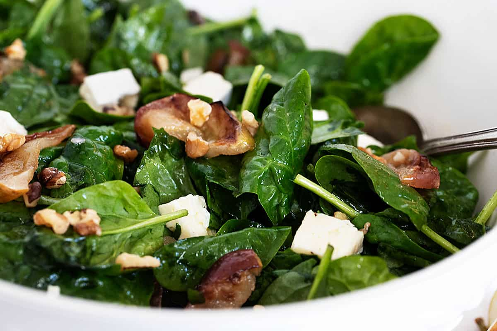
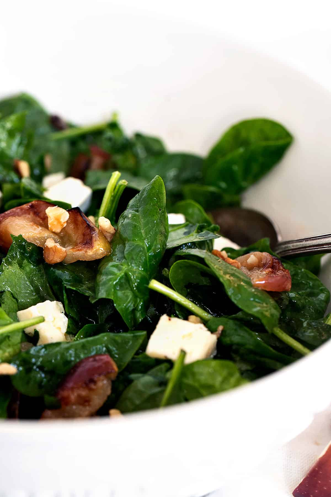

SALAD RECIPES
| 11.9.21
A lovely warm spinach salad, with maple roasted apples, Brie cheese, toasted nuts and optional crumbled bacon.
A delicious warm spinach salad, with maple roasted apples, Brie cheese, nuts and optional bacon, tossed in a warm apple cider and mustard dressing. A perfect Fall salad!
Cooler weather calls for warmer salads and this warm spinach salad fits the bill perfectly. The maple roasted apples in this salad make it a perfect Fall salad, that would be great as an everyday side dish (try it with grilled chicken or pork chops!), but also special enough for the Thanksgiving table.
This spinach salad is dressed with a s warm apple cider, apple cider vinegar and mustard dressing, with just a bit of garlic. The apple slices are brushed with maple syrup before being roasted and toasted pecans (or walnuts) and chunks of Brie cheese, round out this salad.
Spinach – baby spinach works best here. Some people like to remove the stems and you can certainly do that if you like. I rarely bother, myself.
Apples – Granny Smith apples work well here as they hold their shape well. I tend to prefer a red apple and even though they tend to get a little softer after roasting, I love the colour and flavour. You can go either way, as you
Maple Syrup – real maple syrup will give you the best results here, but in a pinch maple-flavoured pancake syrup will bring the maple flavour to the apples, as well.
Brie Cheese – a small round of Brie is all you need for this salad. Camembert would be a good substitute. If neither is available, I think I would look to goat cheese crumbles.
Nuts – use either pecans or walnuts, but either way, it’s well worth the time to toast them for extra flavour in the salad.
Oil – you can use any type of salad oil here, from Extra Virgin Olive Oil to a neutral-tasting cooking oil, such as vegetable or canola. If you are opting to add some bacon to your salad and cooking the bacon fresh, you can use a bit of the bacon’s rendered fat (maybe a Tbsp or so) to replace the oil in the dressing, to bring a bacon flavour to the dressing as well).
Apple Cider Vinegar – apple cider vinegar continues the “apple” them in the dressing, but if you don’t have apple cider vinegar on hand, white or white wine vinegar is good substitute.
Apple Cider or Apple Juice – fresh apple cider will offer the best flavour, but regular apple juice is fine, as well.
This salad is delicious with or without bacon, so if you need to keep it vegetarian or you just don’t feel like frying up bacon, rest assured that you will still have a great salad. That said, some crumbled, cooked bacon would be right at home in this warm spinach salad! Or kick it up a notch and go for cooked, diced pancetta.
You can make the toasted nuts ahead and store in an airtight container. You can also dice the Brie cheese ahead and refrigerate separately until assembling the salad.
The roasted applescan also be made ahead, if necessary, though they are probably at their best fresh and still a little warm. If making ahead, store at room temperature until you assemble the salad, so at least they aren’t cold.
You can mix up the salad dressing ahead, then re-warm just before mixing the salad. Refrigerate until needed.
Assemble the salad just before serving, so that it is warm on the table and the spinach doesn’t get soggy.
This salad has tangy apple/mustard dressing, sweet apples and creamy Brie, but to round it all out, it does need a salty element. If you opt for the bacon addition, you’ve got that covered, if not, be sure to salt your salad. I like to salt right after adding the salad dressing.

GET THE RECIPE:
A lovely warm spinach salad, with maple roasted apples, Brie cheese, toasted nuts and optional crumbled bacon.
5 stars from 2 ratings
prep time:
20 mins
cooking time:
10 mins
total time:
30 mins
4 SERVINGS
Be sure to read the information above this Recipe Card, for more tips, substitutions and variations for this recipe.
Tried this recipe?
Mention @seasonsandsuppers on Instagram or tag #seasonsandsuppers.
Recipe adapted from a Best of Bridge recipe
PREVIOUS POST
Cranberry Oatmeal Yeast BreadNEXT POST
Quick and Easy Udon Noodle SoupDAWN — NOVEMBER 9, 2021 @ 9:24 AM
I always, always, have spinach on hand. And brie? Love it so much!! Gotta give this salad a go. Looks just perfect for fall!
JENNIFER — NOVEMBER 9, 2021 2021 @ 9:50 AM
TThanks Dawn and yes, I always think of this salad for Fall meals :)
Leave a Reply
Your email address will not be published. Required fields are marked *
Are you are looking for simple, seasonal and delicious everyday recipes? Do you love classic, homey, comforting food, but with a modern, real food update? Good! Me, too!
Glazed Lemon Pound Cake Loaf
Cinnamon Swirl Pound Cake Loaf
Simply Perfect 2-Banana Banana bread
Pork Tenderloin Medallions with Mushroom Marsala Sauce
15 Minute Spicy Udon Stir Fry
.jpg)
Red Wine Braised Boneless Short Ribs
Pork Loin with Wine and Herb Gravy
Homemade Baked Beans from dried beans
 LOW AND SLOW COOKING
LOW AND SLOW COOKING
 LEMON BAKING RECIPES
LEMON BAKING RECIPES
AN ELITE CAFEMEDIA FOOD PUBLISHER
CHEYANNE @ NO SPOON NECESSARY — NOVEMBER 9, 2021 @ 7:38 PM
I’m a salad year ‘round kinda girl, so I absolutely love a delicious warm salad during the cooler months. I’m definitely adding this beauty to my line up!! Love the combination of flavors and textures!!
JENNIFER — NOVEMBER 9, 2021 @ 7:54 PM
Thanks so much, Cheyanne!